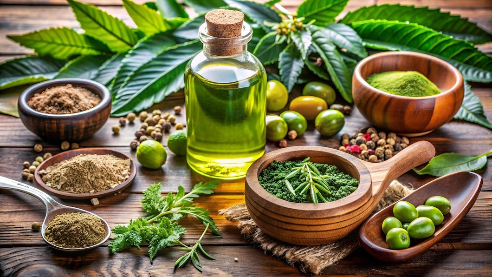

Herbal Hair Growth oil

Discover the natural solution for healthier, fuller, and more resilient hair with Molly’s Herbal Hair Growth Oil. This specially formulated oil is crafted with a blend of potent, plant-based ingredients designed to nourish the scalp, promote rapid hair growth, and restore your hair’s natural shine and strength.
Key Ingredients & Their Benefits:
Amla (Indian Gooseberry): Known for its high Vitamin C content, Amla strengthens hair follicles, reduces breakage, and boosts shine.
Jaba (Hibiscus): Rich in essential nutrients, Jaba encourages hair thickness, reduces breakage, and leaves hair silky and smooth.
Bhringraj: This “King of Herbs” promotes hair growth, minimizes hair loss, and revitalizes scalp health.
Brahmi: Helps reduce dryness and itchiness, soothes the scalp, and enhances hair’s natural shine and strength.
Neem: Known for its purifying properties, Neem maintains scalp health, reduces dandruff, and prevents infections.
Tea Tree Oil: With its natural antifungal properties, Tea Tree Oil keeps the scalp healthy, reduces itchiness, and prevents buildup.
Rosemary: Stimulates blood circulation in the scalp, promoting healthier hair growth and reducing hair fall.
Benefits You’ll Love:
Accelerates Hair Growth: Nourishes the scalp and strengthens roots, encouraging faster, fuller, and healthier hair growth.
Strengthens & Repairs: Reduces breakage, repairs damage, and enhances hair resilience, giving you stronger, more vibrant hair.
Smooth and Shiny Hair: Leaves hair soft, smooth, and shiny, reducing frizz and dryness while providing a natural luster.
Enhanced Scalp Health: Ingredients like Neem, Tea Tree Oil, and Rosemary ensure a balanced, healthy scalp, free from dandruff and buildup.
Supports New Hair Growth: Ingredients like Amla, Bhringraj, and Onion help stimulate hair follicles, supporting new hair growth in thinning areas.
Why Choose Molly’s Herbal Hair Growth Oil?
At Molly’s, we promise you natural, effective hair care. Our oil is free from harmful chemicals, parabens, sulfates, and artificial fragrances, making it safe for regular use on all hair types. Each bottle is crafted with care to give you the best of nature for hair that’s visibly healthier and stronger.
How to Use:
For best results, apply a generous amount to your scalp and massage gently for 5-10 minutes. Leave it on for at least an hour or overnight for deep nourishment, then wash with a mild shampoo. Use 2-3 times weekly for noticeable improvements in growth, strength, and smoothness.